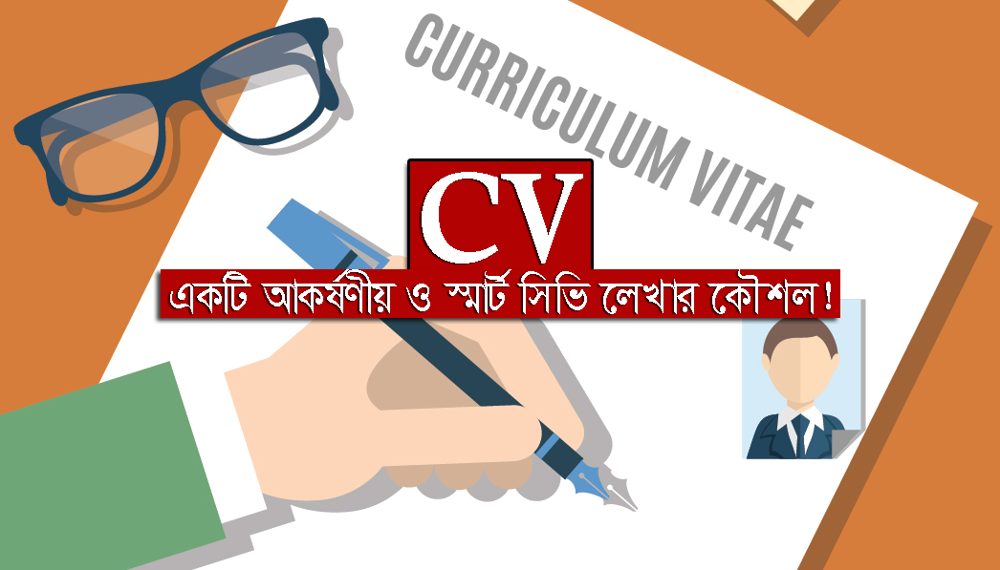

ছোট বেলায় গরু রচনা আমরা সবাই পড়েছি। সেখানে জেনেছি গরুর দুইটি চোখ, দুইটি কান, চারটি পা আছে। বড়বেলায় চাকরি খোঁজার সময় সিভি তৈরি করতে গিয়ে আমরা সেই বিদ্যাটাই যেন একদম ঢেলে দেই। “আমার নাম মোকলেস, হাইট ৫ ফুট ৬ ইঞ্চি, আমি ছেলে, গায়ের রং শ্যামলা, আমি অবিবাহিত, আমার দুটি বোন,একটি ভাই আছে”, কি ভাই? আপনিও লিখেছেন নাকি এসব? দেখে নিন। দুঃখিত আপনাদের একটু খোঁচা দিয়ে লেখাটা শুরু করার জন্য। চলুন, আপনাদের সিভির কিছু ভুল ধরিয়ে দেই।
ফ্রেসার থেকে শুরু করে অন্তত ৮ বছর চাকরি করা পর্যন্ত সিভি হতে হবে ২ পৃষ্ঠার। এরপর ৯-২৫ বছর যাদের চাকরীর বয়স তারা আর একটি পৃষ্ঠা বাড়াতে পারেন।
"সিভি তখনই সার্থক যখন আপনি আপনার কাজগুলো ঠিকভাবে ফুটিয়ে তুলতে পারবেন"
অনেকে বিদেশি কোম্পানিতে সিভি পাঠান, কিন্তু কখনো ভেবেছেন কি আপনাকে তারা কীভাবে কানেক্ট করবে? আপনার ফোন নম্বরের সঙ্গে আপনি তো কান্ট্রি কোডই দেননি। কী লাভ হল সিভি পাঠিয়ে? আপনি সিভি দিয়েছেন কুয়েতে। ইন্টারভিউ দিতে কি কুয়েতই যাবেন? স্কাইপি আইডিটা আজই সিভিতে দিন প্লীজ। মনে রাখবেন আপনার পিতার নাম রমজান হোক আর রহিম হোক তার সাথে চাকরীর কোন সম্পর্ক নেই। চাকরিদাতা খুঁজছে কাজের লোক। যারা জব পোর্টালে সিভি তৈরি করে রেখেছেন, আপডেট করুন সব সময়। লিঙ্কড ইনে একটিভ হোন। এন্ডোর্সমেন্ট বাড়ান।
একই সিভি চালিয়ে দিচ্ছেন সেলস, মার্কেটিং, ব্রান্ডিং, একাউন্ট যে কোন চাকরীর জন্য। ভাই, আপনি জীবনে কি হতে চান আগে সময় নিয়ে ভাবুন। সিভির সবচেয়ে গুরুত্বপূর্ণ দিক হচ্ছে ক্যারিয়ার প্লান। সঠিকভাবে সেটি গুছিয়ে লিখুন। আপনি কি গন্তব্য না জেনেই যাত্রা করছেন? অনেকে ক্যারিয়ার অবজেক্টিভের মধ্যে “Seeking”, “Need”, “Looking for Position”, “Good Organization” এই সব ওয়ার্ড ব্যবহার করেন। এগুলো মারাত্মক ভুল। অবজেক্টিভ হতে হবে শুধুই কাজ করার মেন্টালিটি। চাই, প্রয়োজন, দেন, খুঁজছি এগুলো দুর্বলদের কথা।
মহাঝামেলা, আমি তো ফ্রেশার। মাত্র পাস করলাম। আমি এক্সপেরিয়েন্স পাবো কই?
আপনি গ্র্যাজুয়েট হয়েছেন ২৫ বছর বয়সে। এই ২৫ বছরে কি আপনার অভিজ্ঞতা হয়নি? আপনি কি আপনার বোনের বিয়ের আয়োজন করেননি? তাহলে আপনি কেন একটা কোম্পানির নতুন প্রোডাক্ট লঞ্চ করতে পারবেন না? আপনি কি ভাইয়ের বিয়ের দাওয়াত দিতে যাননি, তাহলে কেন আপনি প্রোডাক্ট লিফলেট বিতরণ করতে পারবেন না?
আপনি কি ছাত্রাবস্থায় পিকনিক করেননি, তাহলে কেন আপনি কোম্পানির হয়ে ইভেন্ট আয়োজন করতে পারবেন না? আপনি কি গ্রাজুয়েশনের ৪টা বছর নিয়মিত ল্যাব রিপোর্ট, পেপার তৈরি করেননি, তাহলে কেন আপনি কোম্পানির জন্য রিপোর্ট করতে পারবেন না? আপনি কি গ্রুপে রিপোর্ট তৈরি করেননি, তাহলে কেন আপনি টিম ওয়ার্কার নন? আপনি কি কোথাও ঘুরতে যাননি, তাহলে কেন আপনি ওয়েল কম্যুনিকেটর নন? ভেবে দেখুন, সবকিছু আপনার মধ্যেই আছে। শুধু জায়গামত ব্যবহার করতে পারছেন না।
আপনার কাছ থেকে একজন ইন্টারভিউয়ার কিন্তু এসবই শুনতে চান। যিনি ভালো গান জানে, তিনি একজন ভালো বক্তা, উপস্থাপক ও প্রেজেন্টর। যিনি নাচ জানেন, তিনি খুবই পরিশ্রমী ও উদ্যমী। যিনি আর্ট জানেন, তিনি খুবই ধৈর্যশীল। এগুলোই আপনার গুণ। ছাত্রাবস্থায় ৫৫% সময় পড়াশোনার পিছনে আর ৪৫% সময় নেটওয়ার্ক তৈরিতে কাজে লাগান। ফ্রেশাররা অভিজ্ঞতা শূন্য নন। তাদের ২৫ বছরের অভিজ্ঞতা আছে। তারা ১০ বছর স্কুলে পড়েছেন, ২ বছর কলেজে, ৪ বছর গ্রাজুয়েশন ও ২ বছর মাস্টার্স। দিনগুলো তো আর এমনি এমনি কাটেনি? ২৫ বছরের কাজের অভিজ্ঞতাকে দুই পেজে আপনার সিভিতে ফুটিয়ে তুলুন। আপনি অভিজ্ঞতা শূন্য নন। আপনার চাকরি হবেই। ইন্টার্নশিপ আথবা ইন্ডাস্ট্রি ভিজিট থাকলে সেগুলো লিখুন।
এটা লেখা বেশ কঠিন। এখানে আপনাকে তুলে ধরতে হবে আপনার পারদর্শিতা, আপনার সাফল্য, কর্মদক্ষতা। আপনি কি করেছেন? কতটা নিঁখুতভাবে করেছেন? কতটা কম সময়ে করেছেন? কতটা কম বাজেটে করেছেন? কত জনের টিম নিয়ে কাজ করেছেন? কত টাকা কোম্পানির সেভ করেছেন? এভাবে আপনাকে কাজের ফিরিস্তি লিখতে হবে।
মনে রাখবেন এক বছর ক্লাস করা একজন ছাত্রের নিত্যদিনের কাজ, কিন্তু বার্ষিক পরীক্ষায় পাস করে নতুন ক্লাসে উত্তীর্ণ হওয়াটা তার সাফল্য। তেমনি, আপনারাও নিত্যদিনের কাজ এবং সাফল্যকে আলাদা ভাবে তুলে ধরুন সিভির মধ্যে। পাওয়ারফুল ওয়ার্ড ব্যবহার করতে পারেন। গুগোল করলেই সিভির জন্য পেয়ে যাবেন অনেক পাওয়ারফুল ওয়ার্ড।
নিজেকে দক্ষ করতে ট্রেনিংয়ের কোন বিকল্প নাই। যারা পড়াশুনা করছেন, তাদের উচিত পাওয়ার পয়েন্ট, এক্সসেল, গ্রাফিক্সের উপরে টুকটাক ট্রেনিং করা। যারা ইংরেজিতে দুর্বল, ঝালাই করে নিন। ৫২ সপ্তাহে বছর। প্রতি সপ্তাহে দুই দিন ছুটি। তাহলে কম করেও বছরে ১০০ দিন ইউনিভার্সিটি বন্ধ থাকে। সময়টা কাজে লাগান। নতুবা পরে হায় হুতাশ করতে হবে। যাদের ট্রেনিং করা আছে তারা ট্রেনিংয়ের হেডিং, ট্রেনারের নাম সহ সিভিতে উল্লেখ করুন।
রেফারেন্স হিসেবে কখনোই আত্মীয় স্বজনকে রাখবেন না। আপনার কোন শিক্ষক অথবা কর্মস্থলে আপনার সিনিয়র কাউকে রাখতে পারলে ভালো হয়। যাদেরকেই রাখুন না কেন অনুমতি নিয়ে নিন। সিভিতে কখনোই ভুল তথ্য দিবেন না।
বিডিজবস, প্রথম আলো জবস, জবসবিডি দিচ্ছে ফ্রি ফরম্যাট। তাদের ওয়েবসাইট ভিজিট করুন। খুব নিখুঁতভাবে সম্পূর্ণ সিভি আপনি পয়সা খরচ করে তৈরি করিয়েও নিতে পারেন। তার জন্য আছে প্রফেশনাল কনসাল্টেন্ট। তাছাড়া অনেক কোম্পানি আজকাল নিজেদের ফরম্যাটেই সিভি নিচ্ছে। ফরম্যাট নয়, সিভি তখনই সার্থক যখন আপনি আপনার কাজগুলো ঠিকভাবে ফুটিয়ে তুলতে পারবেন।
সিভি আপনাকে নিয়ে যাচ্ছে ইন্টারভিউ বোর্ড পর্যন্ত। আপনাকে এনে দিচ্ছে কাঙ্ক্ষিত চাকরি। তাই যার তার কাছ থেকে সিভি নিয়ে নিজের সিভি বানাবেন না। বিয়ে করা বউ হয়তো সারাজীবন থাকবে না, কিন্তু সিভি এমন একটা জিনিস যেটা আপনার সারাজীবন লাগবে। সকলের জন্য শুভকামনা।